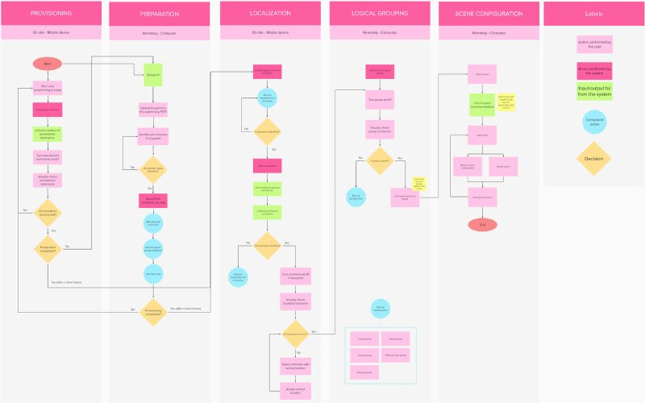
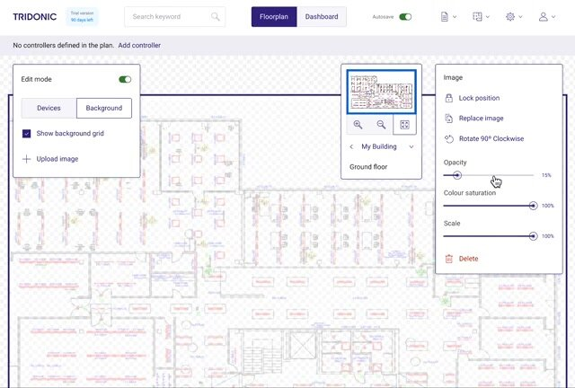
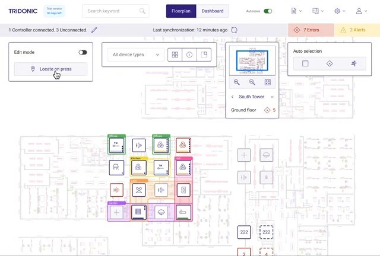
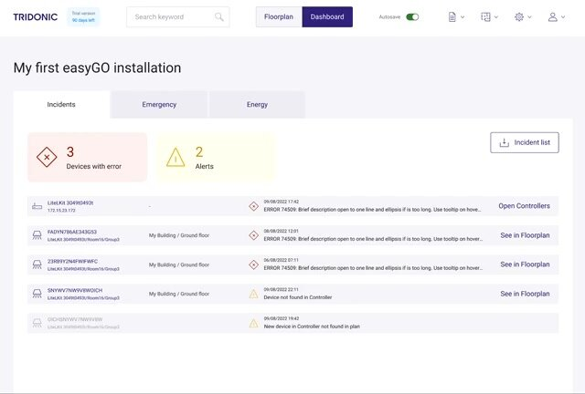

lichtMONITOR: run a building's lighting from its floor plan.
An IoT product for commissioning and monitoring smart lighting in connected buildings. I led its product design, from on-site research to the interface.
Role
Product design lead
Team
A product owner who set scope and priorities, and engineers for the edge server, controllers and cloud
Duration
2022, codename easyGO
Outcome
15–25% lower energy and maintenance costs in connected buildings, and 30% less time on manual checks.
From an empty plan to a monitored building: upload the floor plan, place and group devices, locate one, and follow errors floor by floor. Two minutes, no sound.
01
Context
Tridonic makes the drivers, sensors and controllers inside lighting installations. In 2022 it started easyGO, later lichtMONITOR, to turn those installations into a source of data for running buildings.
A server at the edge collects data from DALI-2 drivers and sensors and sends it to the cloud. The first requirement was a graphical overview of the site: the "GO" in easyGO.
02
Problem
Buildings have thousands of luminaires and sensors, listed by address, not by place. Set-up meant matching addresses by hand, and faults were found by walking the building.
Once an installation was running, nobody had one view of its health. Maintenance was reactive: a lamp failed, someone complained, someone walked the floor.
Two kinds of people do this work in two places. Installers commission devices on site, on a mobile device. Facility managers prepare, group and monitor from a computer, remotely. The product had to carry work across those hand-overs.

The commissioning workflow: provisioning on site, preparation remotely, localisation on site, grouping and scenes remotely.
03
My role and what I owned
I led the product design and connected user needs, business goals and what was technically feasible. The product owner set scope and priorities; I brought the research that informed them.
Research: interviews, contextual inquiry on site and usability tests.
The commissioning workflow and the information architecture.
Wireframes, prototypes and high-fidelity screens, built on the Tridonic Design System, which I also led.
04
Key decisions and trade-offs
Decision 1Start from the building, not the device list
Devices are known by address, but people think in floors and rooms. A new installation starts with the architect's drawing, which is uploaded, then faded and desaturated into a quiet background so devices stand out.
Chosen
Everything happens on the floor plan.
Rejected
Working from the device list. Every later step would go back to addresses.
Trade-off
One more set-up step before anything is useful.

The uploaded plan, faded so devices stand out.
Decision 2Place, group, then find by pressing
On site, most time went into finding which fitting is which. Devices are placed as typed placeholders, then matched to what a controller finds. "Locate on press" makes the real device identify itself: luminaires blink, sensors beep, blinds roll down.
Chosen
A plan that can be prepared remotely before anyone is on site, and one shared plan that autosaves across site and office.
Trade-off
An extra matching step once controllers are connected.

Locate on press: the real device responds.
Decision 3Show faults where they are
Raw device data didn't tell anyone what to do. The top bar always shows connected controllers, the last sync, errors and alerts. Floors carry error badges, and every incident links back to its place on the plan.
Chosen
Persistent counters and an incident list tied to the plan.
Rejected
A clean header with status one click away. For maintenance, knowing that something is wrong matters more.
Trade-off
Counters take space on every screen.

The dashboard: incidents first, linked to the plan.
05
Outcome
15–25%
lower energy and maintenance costs, moving from reactive to planned maintenance.
30%
less time on manual checks and troubleshooting: faults found on the plan, not on foot.
25–35%
faster development, by building on the Tridonic Design System.
Product-level figures, as reported for installations using the system.
06
What I'd do next
Treat the installer's on-site, mobile work as its own product.
We designed it as a smaller version of the desk view. The ladder and the desk ask for different interfaces.
A mobile-first commissioning flow for installers.
From monitoring to prediction: the long-term vision was anticipating failures, deeper building-management integration and more sensors.
Let's talk about your product.
I'm based in Porto and work remotely, hybrid or on site.